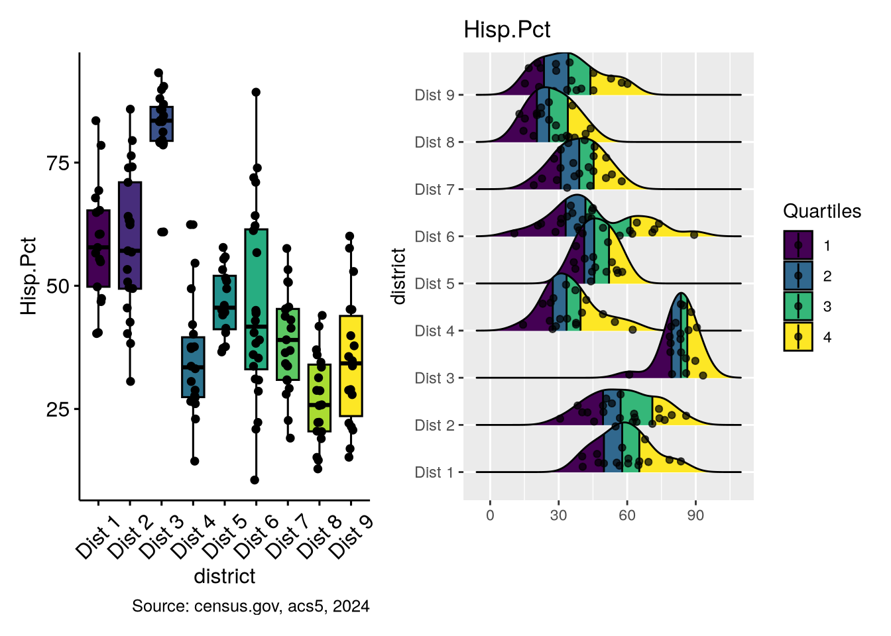
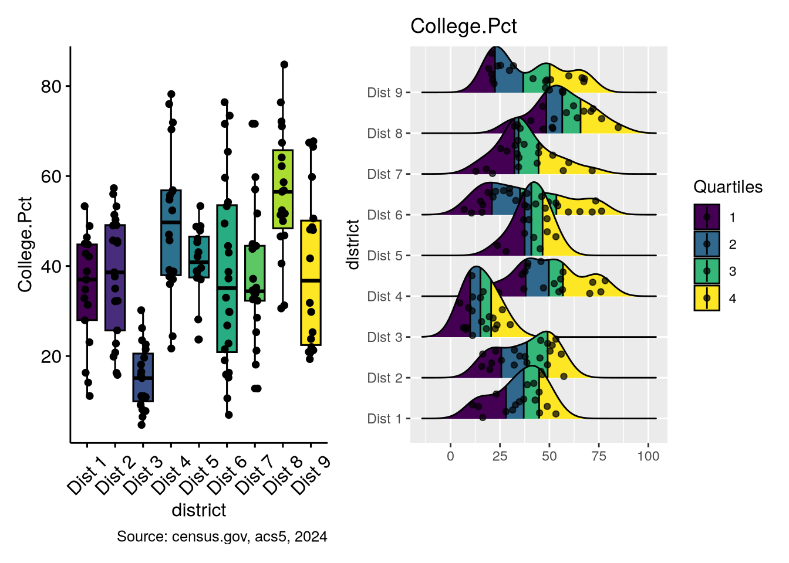
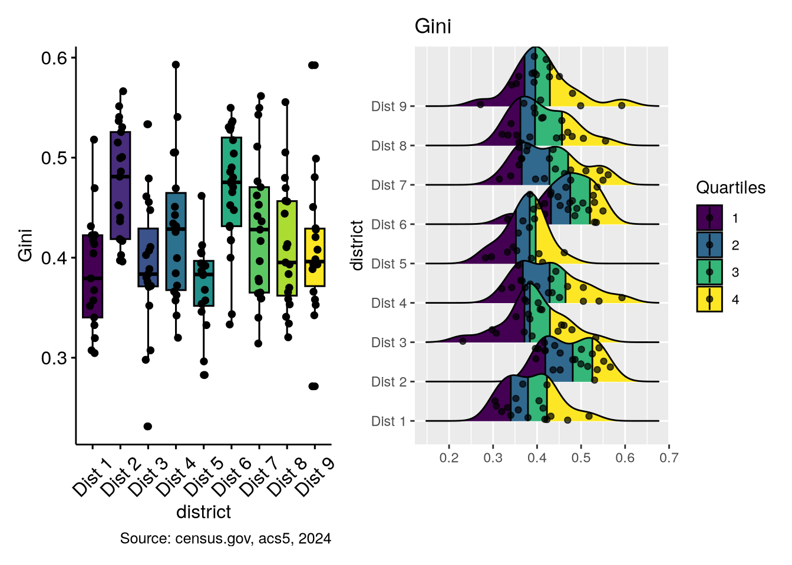

Demographic and Economic Variance in Albuquerque Pt 3
Analysis of Variance
R
Data Science
GIS
Introduction
This is the third in a short series of articles in which I am looking at demographic and economic indicators among the population of Albuquerque, New Mexico. More specifically, I’m considering how they vary among city council districts, the extent to which any variation is not merely random, and what potential explanations there are for the variances.
In the last article, simply mapping the variables and overlaying the council districts seemed to show strong differences between a number of them. Spatial autocorrelation, and the identification of hot and cold spots for many variables, allowed us again to identify apparently significant differences, sometimes extreme, between certain districts.
The current article will be concerned with statistical testing of these apparent variances. A number of hurdles exist before tests can be run, however. ANOVA testing expects variables to be normally distributed. As we saw, few of the variables actually are. They will therefore require an appropriate transformation prior to running the tests. Additionally, as we shall see, many variables will exhibit unequal variance across districts, violating an assumption of the traditional ANOVA test. For these variables, we will use Welch’s t-test.
As before, this article has a secondary purpose, encouraging efficient programming. I will continue to demonstrate how the collapse package can significantly improve the speed of data processing and transformation. I will make use of matrices rather than data frames where possible, only using the latter where necessary. I will also show how purrr’s partial function can be used to write simpler and clearer code.
The shape of the distributions in each district are wildly different. The means do not seem to vary as much, with notable exceptions.
bpHisp.Pct + rpHisp.Pct

In this case, the third district sticks out as the proverbial sore thumb in the ridge plot. Here, also, the means seem all over the board. Based on the prior explorations, a similar feature should be evident in the percentage of college graduates.
bpCollege.Pct + rpCollege.Pct

Indeed it is, though perhaps not so extreme. With regard to the inequality measurement, we saw last time that it showed little correlation to race, age, or education, nor did it show the degree of spatial autocorrelation seen in the other variables. I am, therefore, expecting to see quite a bit less variance between districts here.
bpGini + rpGini

These plots confirm some of the observations made based on the maps and SA statistics. They also reveal how different the distributions are shaped. In most variables, district 3 has a rather compact distribution, which is closer to normal than any other district. On the other hand, the distributions of the fourth district are generally very wide and not at all normal. The sixth and eighth district show the same tendancy for some of the variables.
Both the lack of normal distribution and the apparent non-homogeneity of variance across the districts will be issues to address when performing the analysis of variance. As the above plots show, only a couple of the variables appear to be normally distributed, and there is little homogeneity of variance.
Normalization
Formally, we can use the Shapiro-Wilk test for normal distribution to confirm statistically. The null hypothesis in this test is that the data is normally distributed. \(p\)-values less than 0.05 indicate that the null hypothesis should be rejected, implying that the data are not normally distributed. I’ll start by running a shapiro_test on all of the variables, filtering for \(p\)-values greater than 0.05, which are the normally distributed variables.
I’ll also demonstrate a handy use of purrr’s partial function. The unlist2d function, which I use frequently to collapse a list of data frames into a single one, by default adds a .id column to the results, something I never want. I will use the partial function here to override the default for all future invocations. Note the use of kit’s fast iif function.
variable statistic p.value sig
1 Gini 0.9875 0.1295 No
2 Age.Med 0.9924 0.5045 No
As expected, only two of the variables are normally distributed.
Transformations
I will test some different transformations to see if I can coerce the data to normalcy. I will create a function to do so and filter the data as above. Happily, in R, functions are first-class data types, allowing functions to be passed as arguments to functions. In fact, this custom function highlights the richness of R’s functional programming capabilities, using the built-in mapply() and purrr’s map(). I will write a generic function, and partially apply the first two arguments with partial to create a new function specific to my data. I will also be using the matrix version of the data set for faster processing.
I’ll try a few common transformations such as square root, cube root, and log transformations. I’ll use a modified log transformation, since there are many 0 values. Each function gets passed as an argument to run_shapiro_abq.
[[1]]
variable statistic p.value sig
1 Gini 0.9912 0.3650 No
2 Age.Med 0.9930 0.5695 No
3 In.Poverty.Pct 0.9924 0.5024 No
[[2]]
variable statistic p.value sig
1 Gini 0.9911 0.35754 No
2 Age.Med 0.9903 0.28889 No
3 Income.Med 0.9847 0.05538 No
4 Renter.Occupied.Pct 0.9857 0.07544 No
[[3]]
variable statistic p.value sig
1 Gini 0.9890 0.1994 No
2 Income.Med 0.9963 0.9489 No
Only a few variables can be normalized with these techniques. Now I’ll try an inverse normal transformation. This transformation is based on ranking, and is able to normalize highly skewed distributions. The downside of this transformation is that the “distance” between each observation is lost, obscuring information about the variability within the variable. The blom() function which performs the transformation defaults to a “general” method, so again, I will use partial.
variable statistic p.value sig
1 House.Value.Med 0.9994 1.0000 No
2 Gini 0.9994 1.0000 No
3 Rent.Med 0.9986 0.9999 No
4 Age.Med 0.9993 1.0000 No
5 Income.Med 0.9994 1.0000 No
6 Foreign.Born.Pct 0.9990 1.0000 No
7 Hisp.Pct 0.9994 1.0000 No
8 College.Pct 0.9994 1.0000 No
9 In.Poverty.Pct 0.9987 1.0000 No
10 Renter.Occupied.Pct 0.9995 1.0000 No
11 Housing.Density 0.9995 1.0000 No
All of the variables are normalizable with this transformation, with the exception of vacancy percentage, so I’ll remove it, and create a frame with the transformed data.
Unit: microseconds
expr min lq mean median uq max neval cld
collapse 273.7 303.1 319.2 320 329.8 422.5 100 a
dyplr 1655.0 1696.7 1757.8 1727 1784.0 2731.6 100 b
Analysis of Variance
Homogeneity of variance
Now that I have normally distributed variables, I need to address the second assumption of ANOVA tests, which is homogeneity of variance among the districts. Bartlett’s test can be used for that purpose.
The null hypothesis in Bartlett’s test is that all population variances are equal among the districts, while the alternative hypothesis is that at least two are different. These tests require data frames, so I will need to convert the matrices and add back the district column.
All of the variables tested have a low p-value, showing the existence of variance across districts in all variables. Based on what we know this is hardly surprising.
Welch’s test
Since Gini is the only variable on this list which we had been focused on before, I will also run Welch’s test, which does not expect homogeneity of variance.
All of the variables show statistically significant variance among at least some districts. As expected, the demographic variables we were considering are high on the list, with Hispanic percentage topping the list by a wide margin. The economic variables we considered also show a relatively high statistic/low p-value. Based the analyses we did last time, none of this is surprising.
Post-hoc tests
Tukey’s HSD
Of course, things get more interesting when we look at the post hoc tests. The amusingly named Tukey’s Honestly Significant Difference Test, or Tukey’s range test, allows us to find out between which districts the significant differences are for the ANOVA tests.
The output of a single TukeyHSD is fine, but running the test for multiple variables and simplifying the output for easy manipulation requires some work, such as splitting the single district variable into two. I also want to filter out insignificant results.
The above code assumes that no two pairs will have the exact statistical value, which would be highly unlikely. A more accurate way of weeding out unordered pairs is a little more complicated, and probably unnecessary.
Four districts show no variance at all, while those that do show variance with only two or three other districts. As we saw in the last article, inequality is more randomly distributed geographically than any of the other variables of interest.
Games-Howell
Although I can’t use Tukey’s HSD for the rest of the variables, I can use the Games-Howell test, which does not require homogeneity of variance. First, I’ll execute the test for each variable, capturing the information I want, and processing these results in a similar manner as before.
Starting with median house value, let’s recall the maps showing the geographic distribution of median housing values, as well as the hot and cold spots identified by spatial autocorrelation.
With the exception of Districts six and nine, housing values are lower in district three by a statistically significant margin. It is worth noting that Districts three, six and nine are the southernmost districts.
District 8 shows significantly higher house prices than half of the other districts, three of which are in the south of the city. The prices are not significantly different from the northern and northwestern districts.
Although the overall geographical distribution of income and housing values seemed generally similar, the variances are quite different. The third district, an overwhelming stand-out in housing values, is unremarkable in terms of income. Now, it is the fifth, sixth, and eighth which stand out. I’ll first look at the sixth district.
The sixth district appears to have significantly lower median incomes than most of the other districts, with the exception of the bordering second and seventh, and the southwestern third. Now, I will consider the eighth district, the one with the highest housing values.
District 8, on the other hand shows consistently higher income levels than at least four others, predictably those in the southwest and the more centrally located seventh district. Income levels which are not statistically different from the eighth district are found in those districts which which wrap around the northwestern, northern and northeastern edges of the city. Finally, consider the fifth district. This is in the far northwest, and is growing quickly both residentially and commercially.
This district shows variances with the same four districts identified above. This is interesting because, unlike the eighth, the fifth district was not at all unusual in terms of house prices.
It should come as no surprise at this point that the percentage of Hispanics in each district vary widely, considering the mapping and correlation analyses we have already seen. The Hispanic population varies widely across Albuquerque in ways that are not random. District three is again the standout, being statistically different from every other district. More interesting might be to look at the sixth district, the most average, if you will.
District six sits in the middle of the two extremes, between the third with by far the most Hispanics, and the eighth with by far the least. This can be contrasted with the median income analysis above, in which the sixth district showed lower income than five of the eight others. It did not show significant income variance with District three, however.
The anticipation of variance of college educated people, based on what we have seen so far, is that it will be somewhat the mirror image of the Hispanic variable. We’ll see if this is true.
Educational levels seem to be much more evenly distributed throughout the city, but the third and eighth districts stand out yet again. We can anticipate the results of those specific comparisons.
College educated people seem to be concentrated in the northeast and east. A couple of points to note. The ninth district, while being similar to the eighth, both in terms of education and income levels, never-the-less showed significantly lower house prices. On the other hand, the first district, which shows a significantly lower density of college graduates, was statistically similar in terms of income and housing prices.
Conclusion
The analyses in this article confirm statistically many of the impressions gained in the prior article, namely that there is significant demographic and economic differences between many districts, differences which are not random. The general trend seems to be for economic indicators to be higher in the outer districts to the north, northeast and eastern districts, while they are lower in the southern and southwestern districts. The eighth, in the far northeast, and the third, in the far southwest, show significant, often extreme, ends of the spectrum for many of the variables. Interestingly, the third district, which stands out for most variables, turns out not to be so different from the others, with a couple of exceptions, in terms of income. Finally, inequality, as measured by the Gini index, seems to be pretty equally distributed among the districts, with only a handful of statistically significant variances discovered.